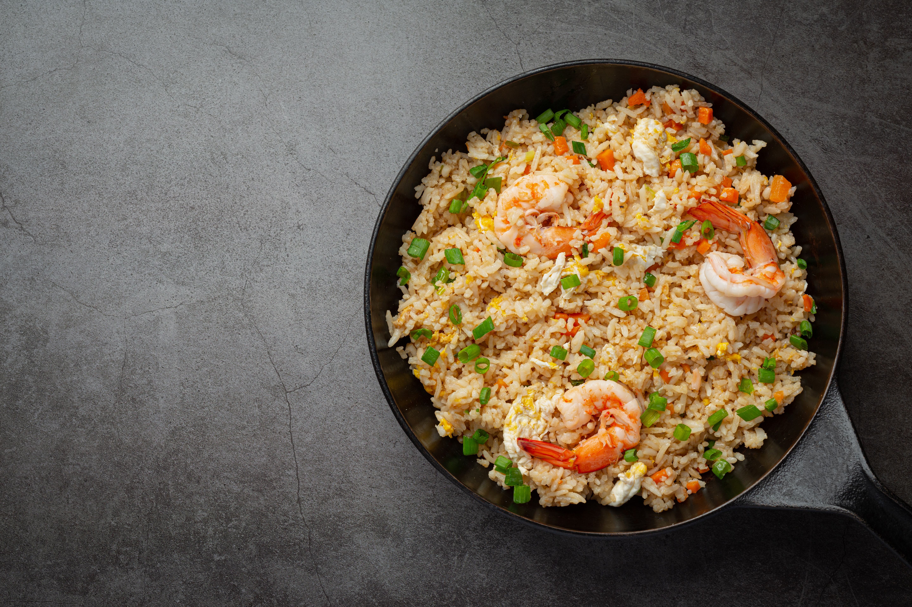

Home
Fried Rice

Description
Here's the recipe for the best homemade fried rice
Ingredients
- Old Cooked Rice
- Egg
- Mince Pork
- Chopped Vegetables (Carrot, Onion)
Steps
- Put oil into the frying pan, heat it up and then scramle some egss into
frying pan
- Put cool cooked rice to pan, stir constantly while on high heat,
careful not to poke and smashed the rice grain
- Throw the remaining chopped vegetables into the frying pan
- Serve and enjoy